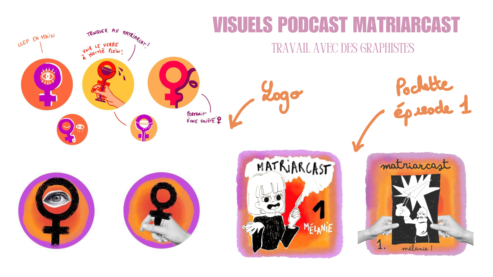

Notre association "Matriarcast" ayant pour objectif de mettre en valeur des figures féminines
des champs universitaire, artistique et culturel.
Notre association s’est d’abord développée autour de la création d’un podcast avec un thème pour chaque épisode de la première saison.
| ★ 1 Thème "Archéologie"
★ 2 Thème "Artistes" ★ 3 Thème "Journalisme politique" ★ 4 Evènement au kiosque citoyen |
Choix du visuel  |
Extrait